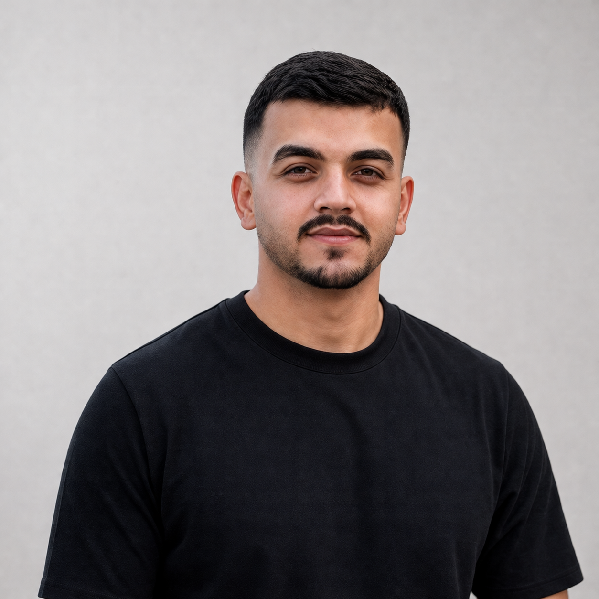

Programming
C#
C++
Java
TypeScript
OOP
Open to Software engineering opportunities
Computer Systems Engineering graduate passionate about Software Engineering and Artificial Intelligence. Equipped with a solid foundation in software development, teamwork, and modern technologies, with hands-on experience building practical applications.

About Me
I am currently studying Computer Systems Engineering at Arab American University, where I have built a strong academic foundation across software development, web technologies, mobile programming, embedded systems, and AI-related coursework.
My goal is to grow into a dependable software engineer by combining technical discipline, curiosity, and steady hands-on practice. I am especially interested in backend development, system logic, and working with teams that care about building useful products well.
Skills
Projects
A machine learning project focused on predicting healthcare risk levels using patient data. The project combined careful preprocessing with model evaluation to create a complete, well-documented workflow from raw data to final results.
I am continuing to strengthen my backend skills by building more practical applications that involve APIs, databases, authentication, and clean business logic. I am also interested in AI, and I am working to strengthen my skills in this field by learning more and applying AI concepts in real projects.
Experience
Foothill Technology Solutions
Completed the first phase of an intensive Backend Training Program focused on practical backend engineering workflows.
AQLAMA.ai
Trained and contributed in a full stack development environment, supporting the building and maintenance of web applications while learning how features are delivered in a team setting.
Arab American University
Developed a broad engineering base through coursework in web development, mobile programming, AI and learning algorithms, embedded systems, and other advanced computing subjects.
Achievements
Completed focused learning in machine learning and data cleaning.
Positioned for junior software engineering roles with growing backend interest.
Sharing project work and technical progress on GitHub.
Contact
If you are looking for a motivated Software Engineer with strong fundamentals, a professional mindset, and room to grow, I would be glad to connect.